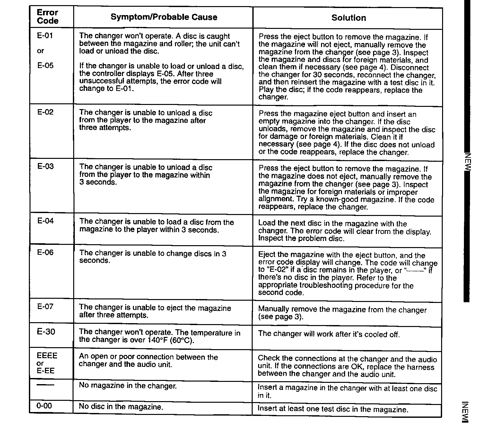
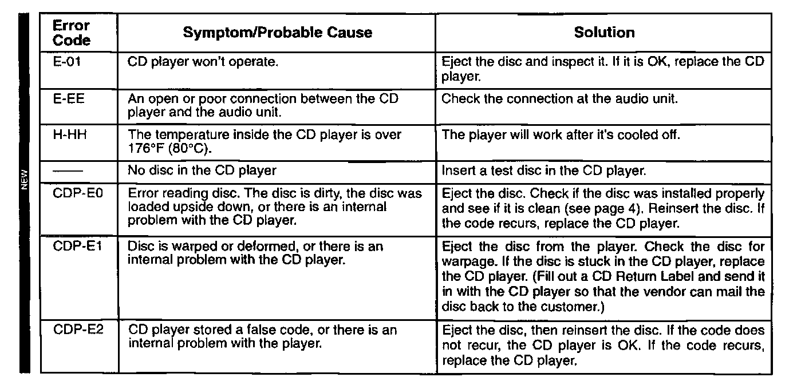
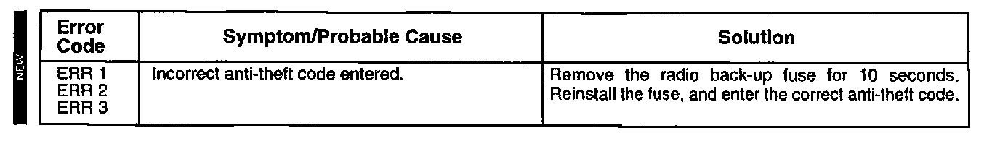
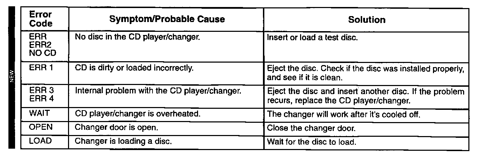

Audio Unit Error Codes: Overview
October 7, 1997BULLETIN NO.
90-010
YEAR
ALL
MODEL
ALL with CD Player / Changer
VIN APPLICATION ALL
Audio Unit Error Codes
(Supersedes 90-010, dated February 19, 1991)
If the audio unit displays an error code, use the troubleshooting tables in this service bulletin to troubleshoot the problem. Refer to Service Bulletin 87-015 for CD Player/Changer exchange information. [NEW]

CD Changer Troubleshooting (All except SLX)

CD Player Troubleshooting (All except SLX)

Radio Troubleshooting (All except SLX)

CD Player/Changer Troubleshooting (SLX only)